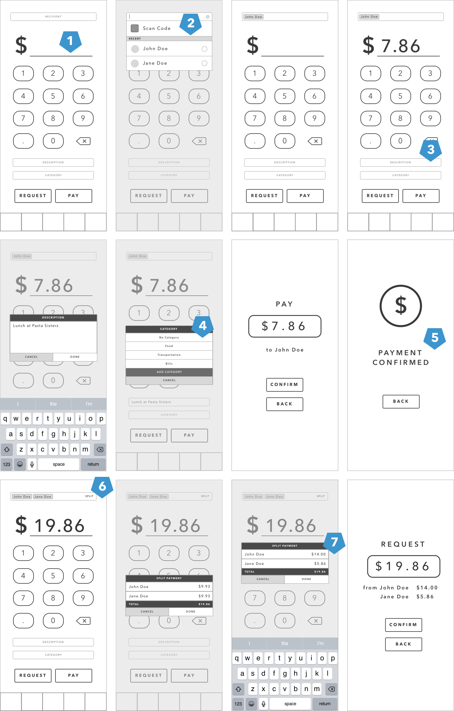
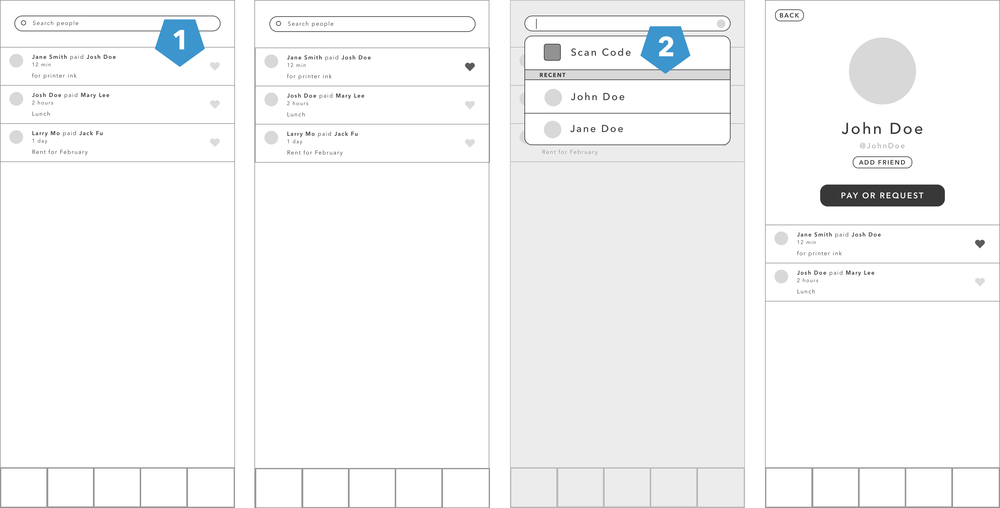
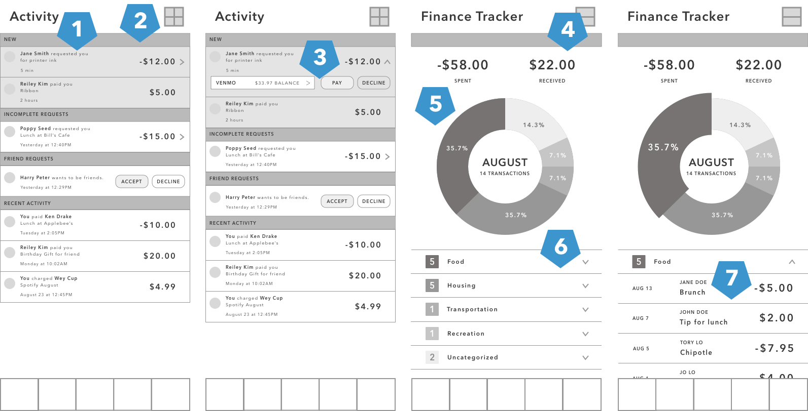

Spring 2018
(4 weeks)
UX Researcher
UX Designer
Sketch
Research
Wireframing
Prototyping
As a college student, I frequently use Venmo to pay or request money from friends. Paying people back for food or housing-related bills is much easier than calculating change and paying with cash. Additionally, the social component of sharing descriptions of payments with other friends adds to the experience of using the mobile application.
I wanted to see if Venmo was being used as it was intended to, and if people had expectations for the application that weren’t being met. With this in mind, I started off my redesign with understanding Venmo’s business goals and asking various Venmo users about their experience with Venmo.
The primary goal of Venmo is to make payments between people seamless and efficient. Beyond this, Venmo is aiming to expand its services beyond the application and allow users to use their Venmo balances to make purchases at participating vendors. The social component – the ability to interact with Venmo friends and their payments – contributes to the overall experience with the application, but is not the primary function of the application. Despite this, the landing page of the application still remains the global feed of payments between people across the world.
Taking these goals into consideration, I created an online survey using Google Forms to see if the user goals aligned with the business goals.
I surveyed 17 college students between the ages 19-22, 52.9% of whom were female and 47.1% of whom were male. (In retrospect, I should have expanded my pool of survey participants.) The survey consisted of questions regarding the frequencies that they used the app, features in the application that were important to them, and situational questions.
82.4% of participants only open Venmo when they need to pay or request money.
The survey participants did not have a preference on their default privacy setting of their transactions.
94.1% of participants use Venmo to split food bills, and 52.9% of participants use Venmo to pay larger amounts of money.
82.4% of participants resort to other applications to calculate how to split the bill.
70.6% of participants use Venmo 1-2 times a week.
58.8% of participants never transfer their Venmo balances to their bank accounts.
Among the three features of banking apps, users commented more on the payment splitting and financial organization features than on the social component of the application. Many survey participants did not see the social component of the application as a necessary feature, as they only used the application for requesting and paying money. One surprising find was that many of the survey participants did not frequently transfer their Venmo balances to their bank accounts, and the payments that were being made were done in smaller sums.
Taking these survey results into consideration, I decided to focus on the following aspects on my redesign of the application:
Following the research, I analyzed the existing architecture of information in Venmo. What I found was a cluttered wealth of pages and a handful of less important pages that could be nested under a single page.
Laying out the different pages in Venmo helped me to visualize a better information architecture for the application. I decided that the landing page would take users straight to the payment screen, and divided the rest of the pages into four sections: Social, Activity, Profile, and Settings.
I decided to focus on three of the main pages listed in the revised architecture of the application: the landing/social, payment, and notifications pages. The following screenshots are what these pages in the application looked like in August 2019.
I began with sketching the layouts of each main page and experimenting with the layout of the navigation bar in order to make the main pages more accessible. By having a fixed navigation bar on the footer of the application instead of a side hamburger menu, users would be reminded by the different functions of the application and possible notifications. Additionally, the payment page became the landing page of the application.
I redesigned the payment page to emphasize the amount of money being paid or requested by users. In doing so, I added a couple new features to the payment process: categories and split payments and categories. Given my intent to add a financial organization feature, I added the categories section to the payment page to allow users to later organize their spending.
The split payment feature would help users refine their transactions when requesting money from multiple people, allowing them to enter different amounts of money for the same transaction. This would reduce the amount of transactions on the social feed and profile page, and help the user better organize their finances.
Many users I surveyed did not use Venmo as a social application, so I removed the global feed and kept the friends feed to keep aspects of the social component of the application. I also moved the search bar to this page, which would allow users to search for their friends and pay or request money from them from their profile pages.
This page would serve as a notifications page, where users could keep track of their recently completed transactions, accept or reject friend requests, or view incomplete transactions requested by or from friends. Additionally, this page would also include a brief summary of the user’s spending history and a breakdown of their expenses given their self-categorization of their spending.
I decided to experiment with Adobe XD to design the final wireframes. The software was pretty intuitive, and the prototyping feature was simple to use. You can view the prototype here.
Given the short window of time I gave myself to complete this project, I recognized the importance of spending a majority of time on research to better understand the goals of both the product and the users. The user research helped me to see areas that Venmo could improve upon, especially in the payment process and desire for a better system to organize finances within the application. Unfortunately, I was unable to user test my final designs. Maybe in a future iteration...?